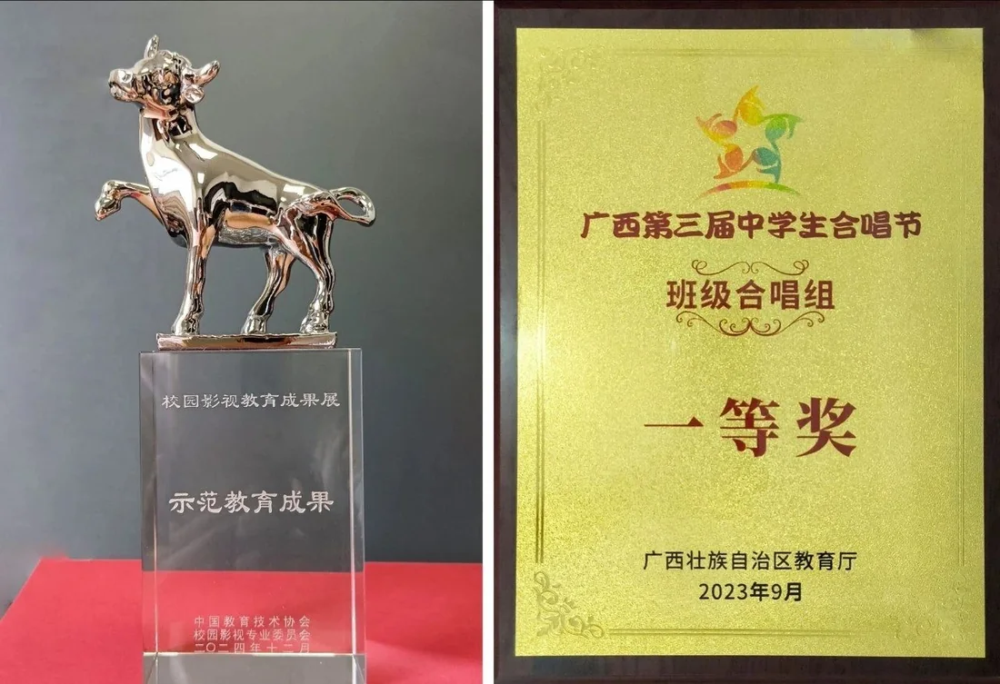

2024
五星级党组织
中小学校基层党组织评星定级
学生作品 Nanning No.29 Middle School · 南湖之滨
南宁市第二十九中学，南宁市教育局直属公办高中、南宁市特色普通高中。我们相信成功不止一种定义，愿每一个孩子都能在这里找到自己的方向。
同学讨论区 匿名发帖 · 先审后发 · 分享校园里的有趣瞬间 去聊聊


关于二十九中
学校创办于 1997 年，是南宁市教育局直属公办高中，坐落于南湖之滨，毗邻南宁市中小学校外教育活动中心。校园占地 23,664 平方米，绿化面积 9,890 多平方米，现有 29 个教学班。
这里没有唯一的“好学生”模板。课堂上的追问、球场上的奔跑、舞台上的表达，都被认真对待。
了解学校概况我们的相信
学校秉持“守正尚诚，多元育人”的办学理念，以“低进高出，高进优出”为教学目标，让不同起点的孩子都能获得向上的力量。
守住课堂质量与育人底线。把国家课程开齐开好，把每一节日常课打磨扎实，让成长有稳固的根基。
诚以待人，诚以治学。老师认真教书，学生踏实求学，家校之间坦诚沟通，让信任成为校园的底色。
课程、社团、体艺、劳动实践并行。合唱团、足球社、篮球社、科创社、文创社，让每一种热爱都有地方生长。
校长寄语
既要胸怀“功成不必在我”的格局境界，
更要勇担“功成必定有我”的历史使命，
在中华民族伟大复兴的壮阔征程中扬帆起航！

校园生活
从画室到操场，从劳动基地到社团摊位。真实的校园，由这些具体的时刻组成。
查看德育活动学校荣誉
荣誉是过去的注脚，不是终点。它们提醒我们，把每一件小事做好。
中小学校基层党组织评星定级

南宁市教育局 · 2025届

班级合唱组 · 自治区教育厅